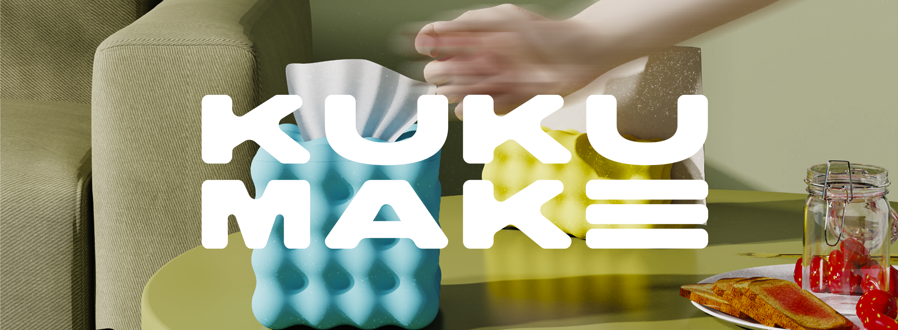
2026 ｜ Los Angeles
KUKU MAKE
Redesigned KUKU MAKE’s brand identity,
transforming it from a 3D-printed
homeware brand into a bold, playful, and
design-driven lifestyle brand rooted in
customization and sustainability.
Brand Mission
KUKU MAKE reimagines everyday home objects
through digital design and 3D printing. Built around
modularity, customization, and sustainability, each
object is designed to adapt to different spaces, needs,
and personalities — turning design from something
fixed into something everyone can make their own.
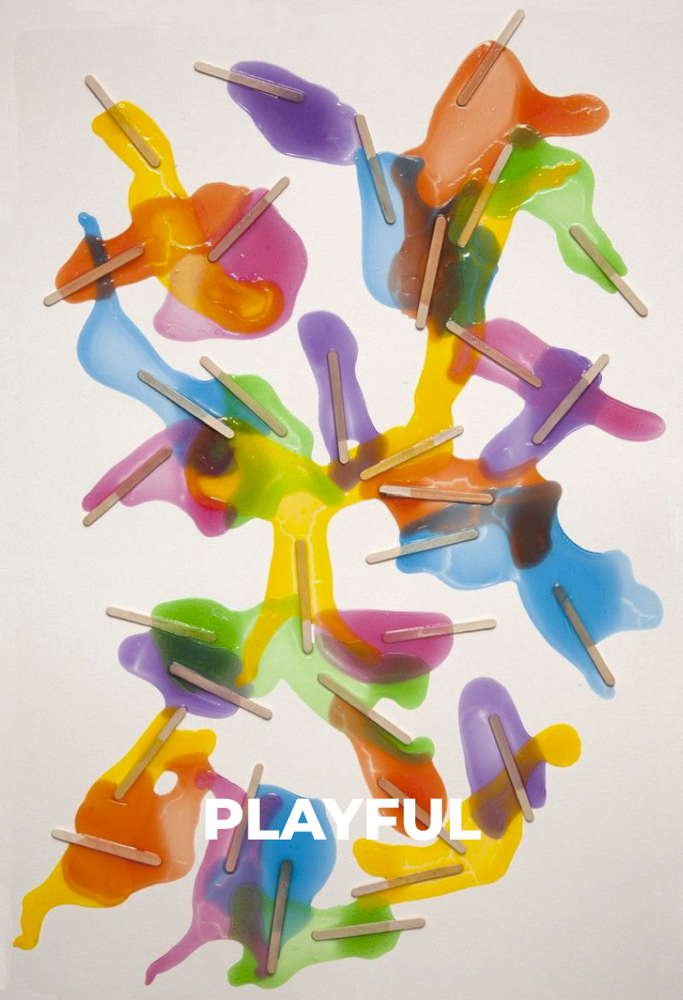
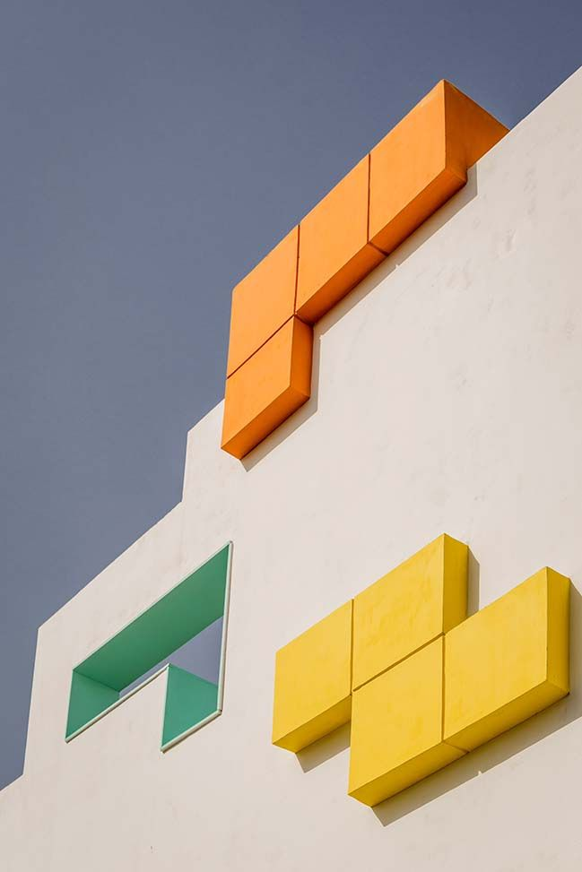
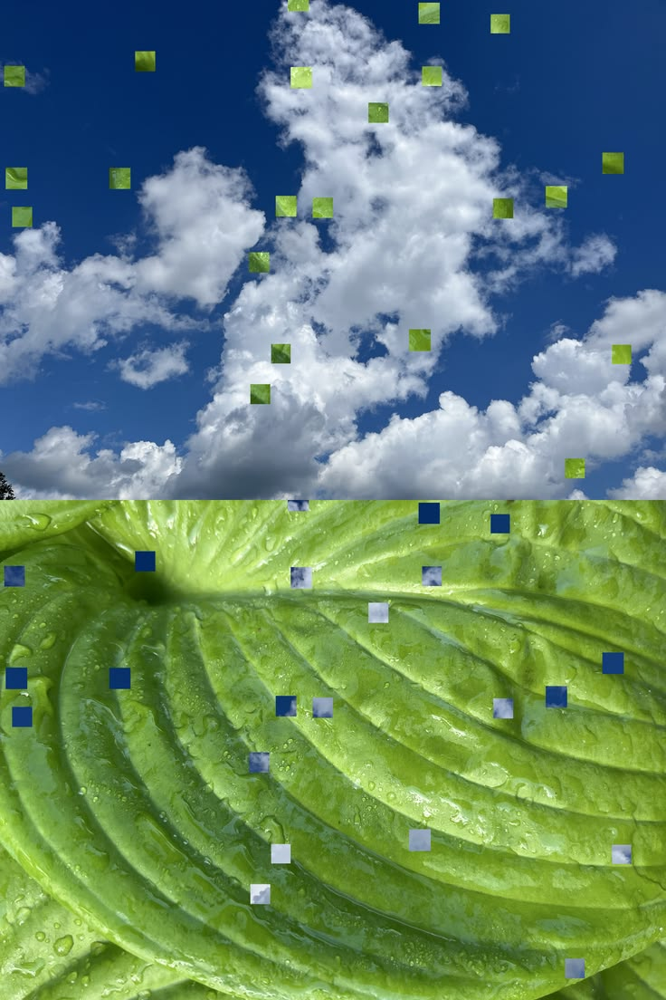
Logo Design
The KUKU MAKE logo translates the brand’s idea of
modularity and playful customization into a
geometric typographic system.
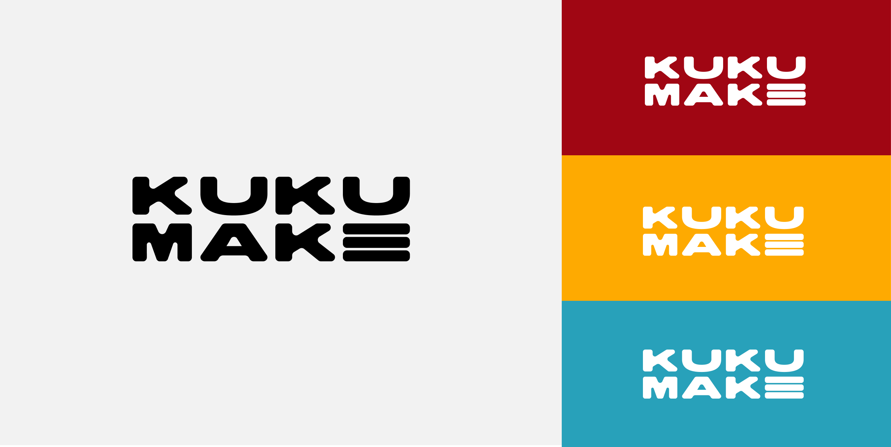
Color Palette
KUKU MAKE’s color system draws inspiration from everyday objects and contemporary living spaces, balancing bold primary colors with warm, grounded secondary tones.
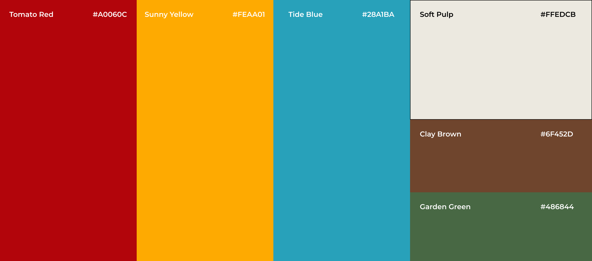
Typography
A clean geometric typeface balances the
expressive product forms and creates clarity across
packaging, editorial layouts, product information,
and digital interfaces.
1 / 4
Website
The website was designed around strong product
imagery, generous typography, and a clear
modular structure, allowing users to understand
both the personality of the brand and the flexibility
of each product.
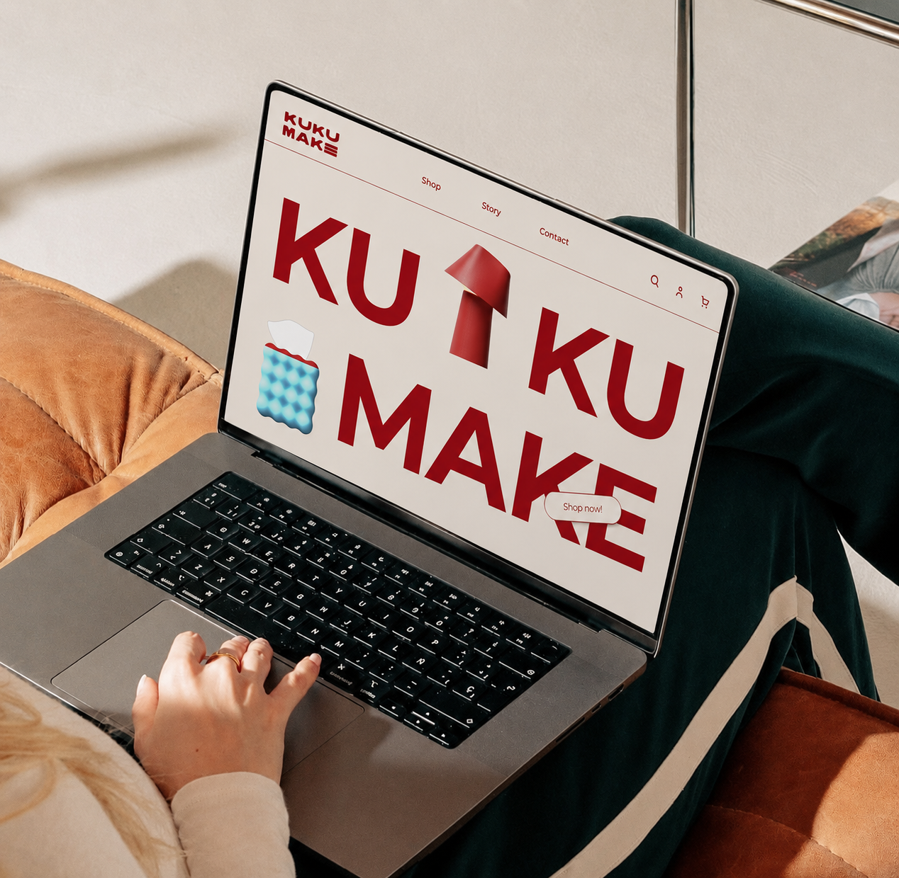
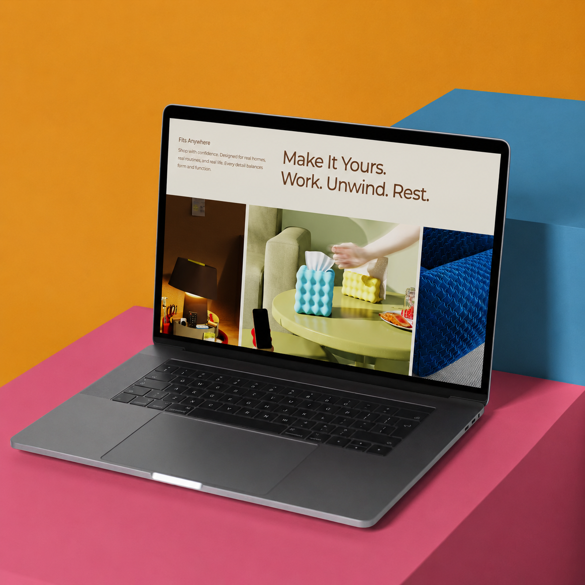
Outcomes
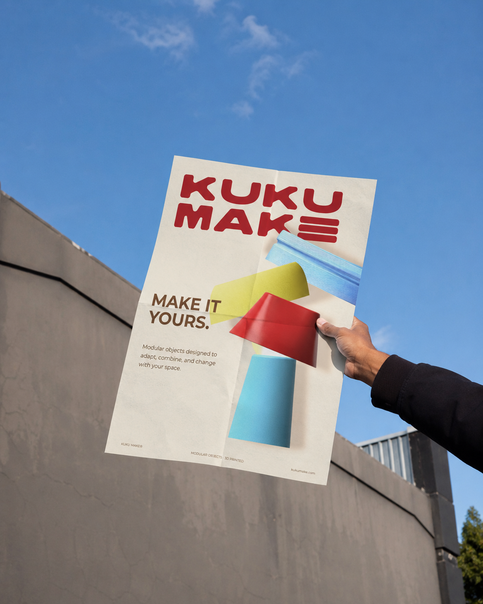
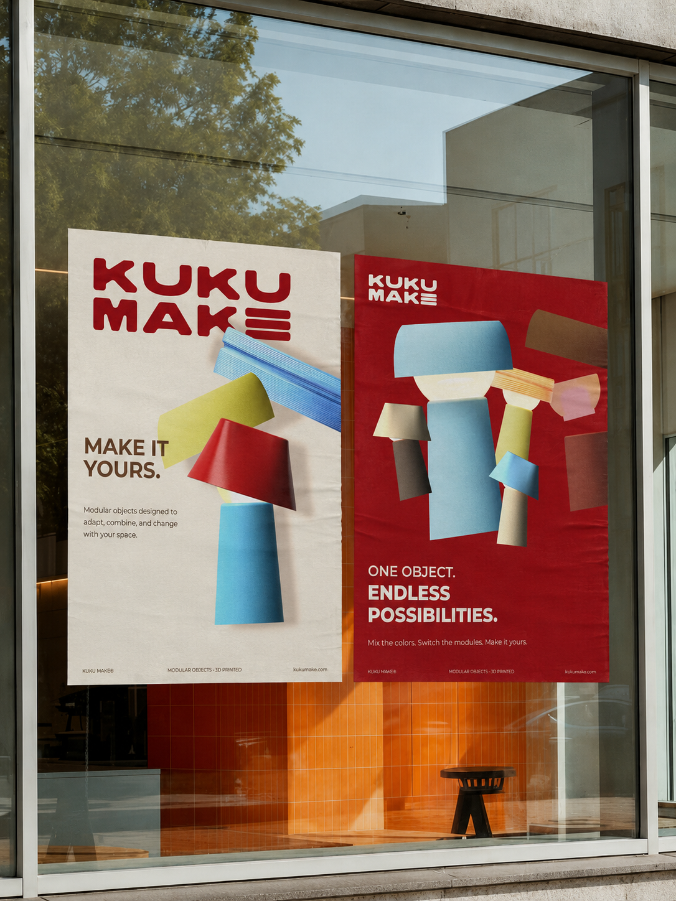
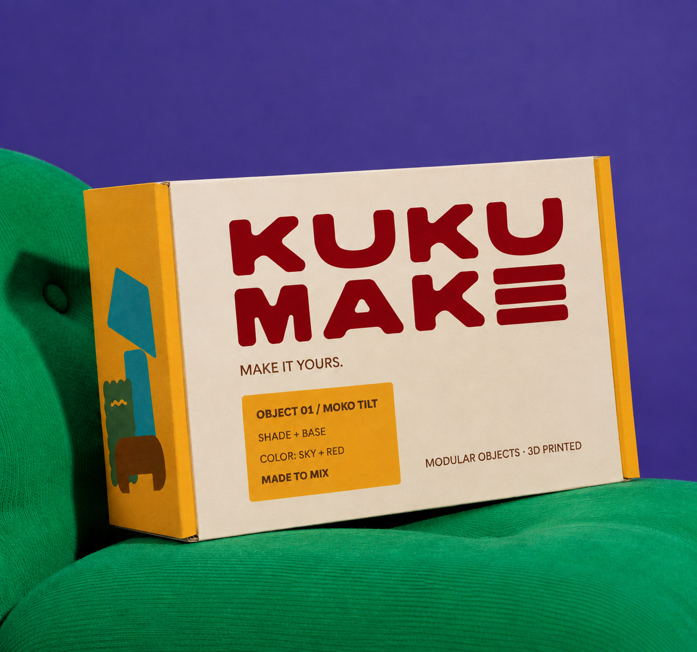
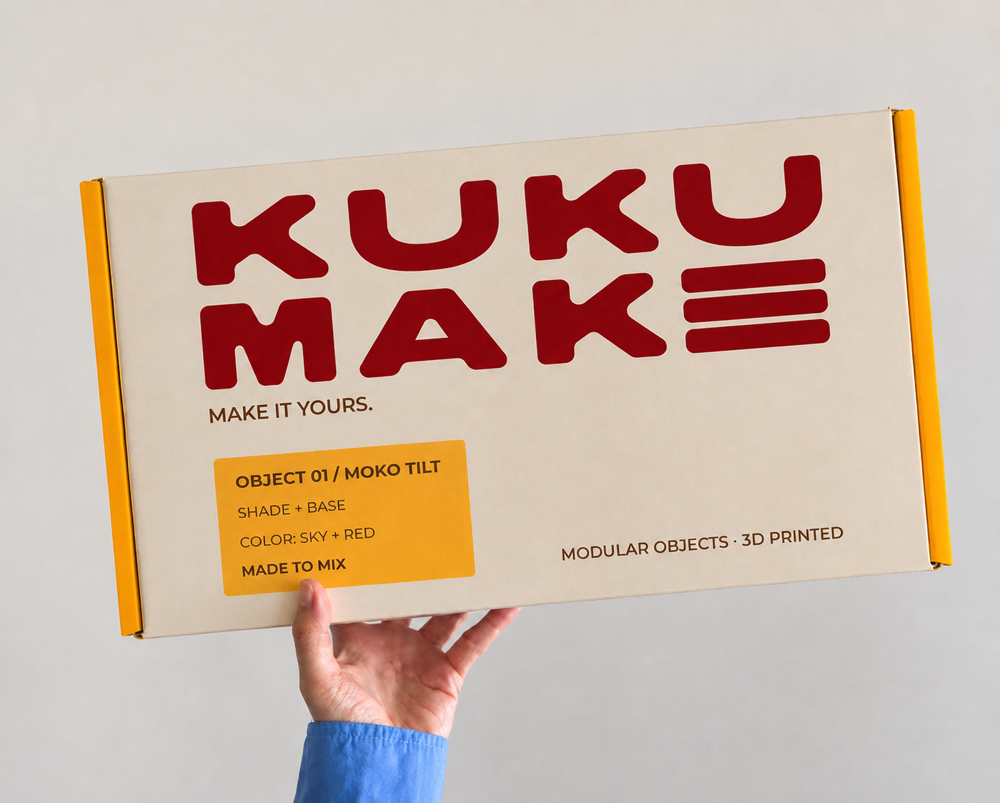

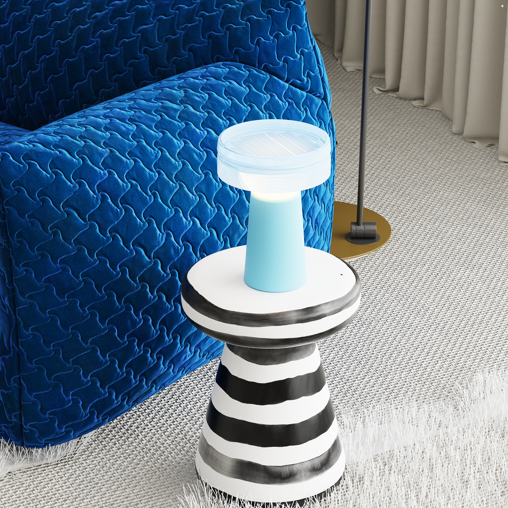
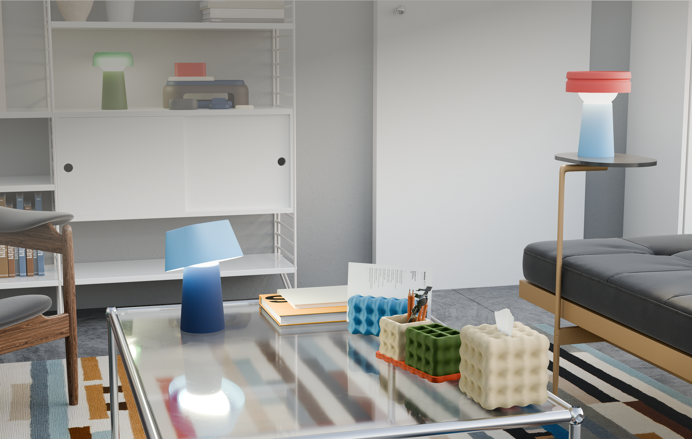